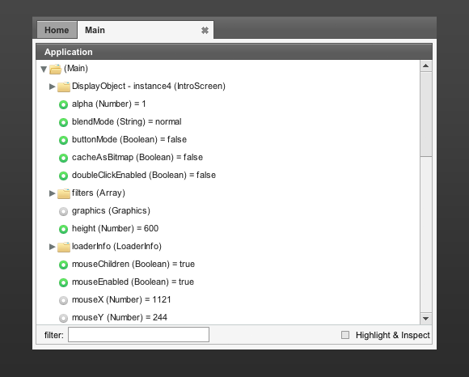

6. The application panel
The application panel shows all the public properties and DisplayObjects of your application in a neatly organized tree structure. The tree is organized to show the DisplayObjects on top, followed by an alphabetical list of public properties and class instances. You can open up folders to see their contents and browse through your application structure with ease. We use icons to distinct between different object types:
Object containing children or properties.
Read / write property.
Read only property.
Unreadable or undefined object.
If you select a folder in the tree, its properties will load in the properties panel. You can edit these properties straight from the Monster Debugger. We'll dive deeper into the properties panel in the next chapter.
By default the tree will start on the same location as where you initialized the Monster Debugger. In the first chapter we initialized the Monster Debugger with the following lines of code:
package {
import com.demonsters.debugger.MonsterDebugger;
import flash.display.Sprite;
public class Main extends Sprite {
public function Main() {
// Start the MonsterDebugger
MonsterDebugger.initialize(this);
MonsterDebugger.trace(this, "Hello World!");
}
}
}
When you run this example you will see that the tree starts in the Main class. However you can change the target of the tree from within your application by using the inspect function:
var foo:Bar = new Bar(); MonsterDebugger.inspect(foo);
The inspect function sets the target of the application tree. This is very useful when switching views or when you would like to inspect a dynamically loaded SWF file.
If you come across any difficulties linking the client SWC to your Flash project please let us know about it on our GetSatisfaction site so we can try to help you.